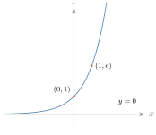
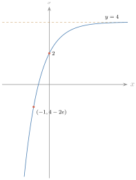
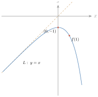
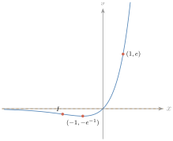

- រកចំនួន \(\displaystyle e\)
- រកដេរីវេនៃអនុគមន៍អិចស្ប៉ូណង់ស្យែលគោល \(\displaystyle e\)
- សិក្សាអថេរភាពនិងសង់ក្រាបដែលទាក់ទងនឹងអនុគមន៍ \(\displaystyle y = e^x\) ។
1. ចំនួន e
គណនាកន្សោម \(\displaystyle \left(1 + \dfrac1n\right)^n\) កាលណា \(\displaystyle n\) យកតម្លៃឡើងៗ ។ គេសង្កេតឃើញថា បើ \(\displaystyle n\) យកតម្លៃកាន់តែធំទៅៗនោះកន្សោម \(\displaystyle \left(1 + \dfrac1n\right)^n\) ខិតទៅរកតម្លៃលីមីតមួយស្មើ \(\displaystyle 2{,}718281\) ។ លីមីត \(\displaystyle \left(1 + \dfrac1n\right)^n\) កាលណា \(\displaystyle n\) ខិតទៅរក \(\displaystyle +\infty\) ហៅថា ចំនួន \(\displaystyle e\) ។
| \(\displaystyle n\) | \(\displaystyle \left(1 + \dfrac1n\right)^n\) |
| \(\displaystyle 1\) | \(\displaystyle 2{,}00000000\) |
| \(\displaystyle 10\) | \(\displaystyle 2{,}59374246\) |
| \(\displaystyle 100\) | \(\displaystyle 2{,}70481383\) |
| \(\displaystyle 1\,000\) | \(\displaystyle 2{,}71692393\) |
| \(\displaystyle 10\,000\) | \(\displaystyle 2{,}71814593\) |
| \(\displaystyle 100\,000\) | \(\displaystyle 2{,}71826824\) |
| \(\displaystyle 1\,000\,000\) | \(\displaystyle 2{,}71828047\) |
| \(\displaystyle 10\,000\,000\) | \(\displaystyle 2{,}71828169\) |
| \(\displaystyle 100\,000\,000\) | \(\displaystyle 2{,}71828181\) |
| \(\displaystyle 1\,000\,000\,000\) | \(\displaystyle 2{,}71828183\) |
គេបាន \(\displaystyle e = \displaystyle\lim_{n \to +\infty}\left(1 + \dfrac1n\right)^n \approx 2{,}7182\) ។ តម្លៃនេះជាតម្លៃដែលគេនិយមប្រើប្រាស់ ។
2. អនុគមន៍អិចស្ប៉ូណង់ស្យែល
2.1. និយមន័យ និងលក្ខណៈគ្រឹះ
2.1.1. និយមន័យ ចំពោះគ្រប់ចំនួនពិត \(\displaystyle x\) អនុគមន៍ \(\displaystyle f\) កំណត់ដោយ \(\displaystyle f(x) = e^x\) ហៅថា អនុគមន៍អិចស្ប៉ូណង់ស្យែលគោល \(\displaystyle e\) ឬអនុគមន៍អិចស្ប៉ូណង់ស្យែល ។
2.1.2. ក្រាប សង់ក្រាបនៃអនុគមន៍ \(\displaystyle y = e^x\) ។
| \(\displaystyle x\) | \(\displaystyle y = e^x\) |
| \(\displaystyle -1\) | \(\displaystyle y = \dfrac1e \approx 0{,}37\) |
| \(\displaystyle 0\) | \(\displaystyle y = e^0 = 1\) |
| \(\displaystyle 1\) | \(\displaystyle y = e^1 \approx 2{,}72\) |
ដោយគោល \(\displaystyle e = 2{,}7182 > 1\) នោះអនុគមន៍អិចស្ប៉ូណង់ស្យែលជាអនុគមន៍កើនលើ \(\displaystyle \mathbb{R}\) ។ ក្រាបនៃ \(\displaystyle y = e^x\) ស្ថិតនៅលើអ័ក្ស \(\displaystyle x'Ox\) ទាំងស្រុង (ព្រោះ \(\displaystyle e^x > 0\)) ហើយកាត់អ័ក្ស \(\displaystyle y'Oy\) ត្រង់ចំណុច \(\displaystyle (0, 1)\) ។

2.1.3. លក្ខណៈ ចំពោះគ្រប់ចំនួនពិត \(\displaystyle m\), \(\displaystyle n\) គេបាន ៖
ក. \(\displaystyle e^{m + n} = e^m \cdot e^n\) ខ. \(\displaystyle e^{-n} = \dfrac{1}{e^n}\) គ. \(\displaystyle e^{m - n} = \dfrac{e^m}{e^n}\) ឃ. \(\displaystyle (e^m)^n = e^{mn}\) ។
ឧទាហរណ៍ : ចំពោះគ្រប់ចំនួនពិត \(\displaystyle x\) គេបាន \(\displaystyle \dfrac{e^{4x - 1}}{e^{x + 3}} = e^{4x - 1 - x - 3} = e^{3x - 4}\) ។
2.2. ដេរីវេនៃអនុគមន៍អិចស្ប៉ូណង់ស្យែល
ឧទាហរណ៍ 1 : គេមានអនុគមន៍ \(\displaystyle y = e^x\) ។ រកដេរីវេនៃ \(\displaystyle y\) ត្រង់ \(\displaystyle x_0\) ។
តាមនិយមន័យដេរីវេ គេបាន
ដូច្នេះ ដេរីវេនៃអនុគមន៍ \(\displaystyle y = e^x\) គឺអនុគមន៍ \(\displaystyle y' = e^x\) ។
បើ \(\displaystyle f(x) = e^x\) នោះ \(\displaystyle f'(x) = e^x\) ។
ឧទាហរណ៍ 2 : គណនាដេរីវេនៃអនុគមន៍ \(\displaystyle y = e^{2x}\) ។ គេបាន \(\displaystyle y' = (e^{2x})' = (2x)'e^{2x} = 2e^{2x}\) ។
បើ \(\displaystyle f(x) = e^{u(x)}\) នោះ \(\displaystyle f'(x) = u'(x) \cdot e^{u(x)}\) ។
គណនាដេរីវេនៃអនុគមន៍ ក. \(\displaystyle y = e^{4x}\) ខ. \(\displaystyle y = e^{x^2 - 3x + 1}\) គ. \(\displaystyle y = xe^x\) ។
ក. \(\displaystyle y' = (e^{4x})' = (4x)'e^{4x} = 4e^{4x}\)
ខ. \(\displaystyle y' = (e^{x^2 - 3x + 1})' = (x^2 - 3x + 1)'e^{x^2 - 3x + 1} = (2x - 3)e^{x^2 - 3x + 1}\)
គ. \(\displaystyle y' = (xe^x)' = (x)'e^x + x(e^x)' = e^x + xe^x = (1 + x)e^x\) ។
គណនាដេរីវេនៃអនុគមន៍ ក. \(\displaystyle y = (x^2 - 3)e^x\) ខ. \(\displaystyle y = x^2e^{-2x}\) គ. \(\displaystyle y = \dfrac{\sqrt x}{e^x}\) ។
មើលចម្លើយ
ក. \(\displaystyle y' = (x^2 + 2x - 3)e^x\) ខ. \(\displaystyle y' = (2x - 2x^2)e^{-2x}\) គ. \(\displaystyle y' = \dfrac{1 - 2x}{2e^x\sqrt x}\) ។
2.3. សិក្សាអថេរភាពនិងសង់ក្រាប
សិក្សាអថេរភាពនិងសង់ក្រាបនៃអនុគមន៍ \(\displaystyle y = 4 - 2e^{-x}\) ។
- ដែនកំណត់ \(\displaystyle D = \mathbb{R}\) ។
- ទិសដៅអថេរភាព ៖ ដេរីវេ \(\displaystyle y' = 2e^{-x}\) ; \(\displaystyle y' > 0\) ចំពោះគ្រប់តម្លៃ \(\displaystyle x \in D\) ។ អនុគមន៍កើនលើ \(\displaystyle D\) ។
- លីមីត ៖ \(\displaystyle \displaystyle\lim_{x \to -\infty}(4 - 2e^{-x}) = 4 - 2\lim_{x \to -\infty}\left(\dfrac{1}{e^x}\right) = -\infty\) ; \(\displaystyle \displaystyle\lim_{x \to +\infty}(4 - 2e^{-x}) = 4 - 2\lim_{x \to +\infty}\left(\dfrac{1}{e^x}\right) = 4\) ។ ដូច្នេះ សមីការបន្ទាត់ \(\displaystyle y = 4\) ជាអាស៊ីមតូតដេកនៃក្រាប ។
- តារាងអថេរភាព ៖
| \(\displaystyle x\) | \(\displaystyle -\infty\) | \(\displaystyle +\infty\) | |
| \(\displaystyle y'\) | \(\displaystyle +\) | ||
| \(\displaystyle y\) | \(\displaystyle -\infty\) | \(\displaystyle \nearrow\) | \(\displaystyle 4\) |
- ក្រាបនៃអនុគមន៍ \(\displaystyle y = 4 - 2e^{-x}\) ៖ ចំណុចប្រសព្វរវាងក្រាបនិងអ័ក្ស \(\displaystyle y'Oy\) ៖ \(\displaystyle x = 0\) នាំឱ្យ \(\displaystyle y = 2\) ។ សង់ចំណុចបន្ថែម \(\displaystyle x = -1\), \(\displaystyle y = 4 - 2e \approx -1{,}44\) ។

អនុគមន៍ \(\displaystyle f\) កំណត់លើ \(\displaystyle \mathbb{R}\) ដោយ \(\displaystyle y = f(x) = x - e^x\) មានក្រាប \(\displaystyle C\) ។
ក. គណនា \(\displaystyle \displaystyle\lim_{x \to -\infty}f(x)\) និង \(\displaystyle \displaystyle\lim_{x \to +\infty}f(x)\) ។ រកសមីការអាស៊ីមតូតទ្រេត \(\displaystyle L\) នៃក្រាប \(\displaystyle C\) ។
ខ. សិក្សាអថេរភាពនៃ \(\displaystyle f\) និងសង់តារាងអថេរភាពនៃ \(\displaystyle f\) ។
គ. គណនា \(\displaystyle f(1)\) និង \(\displaystyle f(2)\) ។ សង់ \(\displaystyle L\) និង \(\displaystyle C\) ក្នុងតម្រុយអរតូណរម៉ាល់ \(\displaystyle (O, \vec i, \vec j)\) ។
\(\displaystyle C : f(x) = x - e^x\) ដែនកំណត់ \(\displaystyle D = \mathbb{R}\) ។
ក. គណនាលីមីត ៖
- \(\displaystyle \displaystyle\lim_{x \to -\infty}f(x) = \lim_{x \to -\infty}(x - e^x) = -\infty\) (ព្រោះ \(\displaystyle \displaystyle\lim_{x \to -\infty}e^x = 0\)) ។
- \(\displaystyle \displaystyle\lim_{x \to +\infty}f(x) = \lim_{x \to +\infty}(x - e^x)\) (រាងមិនកំណត់ \(\displaystyle \infty - \infty\)) \(\displaystyle = \displaystyle\lim_{x \to +\infty}e^x\left(\dfrac{x}{e^x} - 1\right) = -\infty\) (ព្រោះ \(\displaystyle \displaystyle\lim_{x \to +\infty}e^x = +\infty\) និង \(\displaystyle \displaystyle\lim_{x \to +\infty}\dfrac{x}{e^x} = 0\)) ។
រកសមីការអាស៊ីមតូតទ្រេត \(\displaystyle L\) នៃក្រាប \(\displaystyle C\) ៖ ដោយ \(\displaystyle f(x) = x - e^x\) គេបាន \(\displaystyle \displaystyle\lim_{x \to -\infty}[f(x) - x] = \lim_{x \to -\infty}(-e^x) = 0\) ។ ដូច្នេះ \(\displaystyle L : y = x\) ជាអាស៊ីមតូតទ្រេតនៃក្រាប \(\displaystyle C\) (កាលណា \(\displaystyle x \to -\infty\)) ។
ខ. សិក្សាអថេរភាពនៃ \(\displaystyle f\) ៖
- ដេរីវេ \(\displaystyle f'(x) = (x - e^x)' = 1 - e^x\) ។
- សញ្ញានៃដេរីវេ ៖ \(\displaystyle f'(x)\) មានសញ្ញាដូច \(\displaystyle 1 - e^x\) ។ \(\displaystyle 1 - e^x = 0 \Leftrightarrow e^x = 1 \Leftrightarrow x = 0\) ; \(\displaystyle 1 - e^x > 0 \Leftrightarrow e^x < 1 \Leftrightarrow x < 0\) ; \(\displaystyle 1 - e^x < 0 \Leftrightarrow e^x > 1 \Leftrightarrow x > 0\) ។
អនុគមន៍ \(\displaystyle f\) កើនលើចន្លោះ \(\displaystyle (-\infty, 0)\) ព្រោះ \(\displaystyle f'(x) > 0\) ; អនុគមន៍ \(\displaystyle f\) ចុះលើចន្លោះ \(\displaystyle (0, +\infty)\) ព្រោះ \(\displaystyle f'(x) < 0\) ។ តម្លៃអតិបរមាធៀប \(\displaystyle f(0) = 0 - e^0 = -1\) ។
| \(\displaystyle x\) | \(\displaystyle -\infty\) | \(\displaystyle 0\) | \(\displaystyle +\infty\) | ||
| \(\displaystyle f'(x)\) | \(\displaystyle +\) | \(\displaystyle 0\) | \(\displaystyle -\) | ||
| \(\displaystyle f(x)\) | \(\displaystyle -\infty\) | \(\displaystyle \nearrow\) | \(\displaystyle -1\) | \(\displaystyle \searrow\) | \(\displaystyle -\infty\) |
គ. គណនា \(\displaystyle f(1)\), \(\displaystyle f(2)\) ៖ \(\displaystyle f(1) = 1 - e \approx -1{,}7\) ; \(\displaystyle f(2) = 2 - e^2 \approx -5{,}4\) ។ សង់ \(\displaystyle L\) និង \(\displaystyle C\) ៖ \(\displaystyle L : y = x\) ដែល \(\displaystyle x = 0\) នាំឱ្យ \(\displaystyle y = 0\) និង \(\displaystyle x = 1\) នាំឱ្យ \(\displaystyle y = 1\) ។

សិក្សាអថេរភាពនិងសង់ក្រាបនៃអនុគមន៍ \(\displaystyle y = xe^x\) ។
- ដែនកំណត់ \(\displaystyle D = \mathbb{R}\) ។
- ទិសដៅអថេរភាព ៖ ដេរីវេ \(\displaystyle y' = (x)'e^x + x(e^x)' = e^x(1 + x)\) ។ ដោយ \(\displaystyle e^x > 0\) ចំពោះគ្រប់ \(\displaystyle x \in \mathbb{R}\) នោះ \(\displaystyle y'\) មានសញ្ញាដូច \(\displaystyle x + 1\) ។ \(\displaystyle y' = 0\) គេបាន \(\displaystyle x + 1 = 0\) នាំឱ្យ \(\displaystyle x = -1\) ។ សញ្ញាដេរីវេ ៖ \(\displaystyle y' < 0\) លើ \(\displaystyle (-\infty, -1)\) និង \(\displaystyle y' > 0\) លើ \(\displaystyle (-1, +\infty)\) ។ ដូច្នេះអនុគមន៍ចុះលើ \(\displaystyle (-\infty, -1)\) ហើយកើនលើ \(\displaystyle (-1, +\infty)\) ។ ត្រង់ \(\displaystyle x = -1\) អនុគមន៍ \(\displaystyle y = f(x)\) មានតម្លៃអប្បបរមាធៀប \(\displaystyle f(-1) = -e^{-1} \approx -0{,}37\) ។
- លីមីត ៖ ដោយ \(\displaystyle \displaystyle\lim_{x \to -\infty}x = -\infty\) ហើយ \(\displaystyle \displaystyle\lim_{x \to -\infty}e^x = 0\) គេបាន \(\displaystyle \displaystyle\lim_{x \to -\infty}xe^x = -\lim_{x \to -\infty}\dfrac{-x}{e^{-x}} = 0\) ។ ដូច្នេះ បន្ទាត់សមីការ \(\displaystyle y = 0\) ជាអាស៊ីមតូតដេកនៃក្រាបកាលណា \(\displaystyle x \to -\infty\) ។ ដោយ \(\displaystyle \displaystyle\lim_{x \to +\infty}x = +\infty\) ហើយ \(\displaystyle \displaystyle\lim_{x \to +\infty}e^x = +\infty\) គេបាន \(\displaystyle \displaystyle\lim_{x \to +\infty}xe^x = +\infty\) ។
- តារាងអថេរភាព ៖
| \(\displaystyle x\) | \(\displaystyle -\infty\) | \(\displaystyle -1\) | \(\displaystyle +\infty\) | ||
| \(\displaystyle y'\) | \(\displaystyle -\) | \(\displaystyle 0\) | \(\displaystyle +\) | ||
| \(\displaystyle y\) | \(\displaystyle 0\) | \(\displaystyle \searrow\) | \(\displaystyle -e^{-1}\) | \(\displaystyle \nearrow\) | \(\displaystyle +\infty\) |
- ក្រាប \(\displaystyle y = xe^x\) ៖ ចំណុចប្រសព្វរវាងក្រាបនិងអ័ក្ស \(\displaystyle x'Ox\) ៖ \(\displaystyle y = 0\) នាំឱ្យ \(\displaystyle x = 0\) ។ ក្រាបកាត់តាមគល់ \(\displaystyle O\) ។ ចំណុចរបត់ ៖ \(\displaystyle y'' = (x + 2)e^x\) ដោយ \(\displaystyle e^x > 0\), \(\displaystyle y''\) មានសញ្ញាដូច \(\displaystyle x + 2\) ; \(\displaystyle y'' = 0\) គេបាន \(\displaystyle x + 2 = 0\) នាំឱ្យ \(\displaystyle x = -2\) ។ សញ្ញា \(\displaystyle y'' < 0\) លើ \(\displaystyle (-\infty, -2)\) និង \(\displaystyle y'' > 0\) លើ \(\displaystyle (-2, +\infty)\) ។ ដូច្នេះអនុគមន៍មានចំណុចរបត់មួយគឺ \(\displaystyle I(-2, -2e^{-2})\) ឬ \(\displaystyle I(-2, -0{,}27)\) ។

សិក្សាអថេរភាពនិងសង់ក្រាបនៃអនុគមន៍ខាងក្រោម ៖ ក. \(\displaystyle y = x + e^x\) ខ. \(\displaystyle f(x) = \dfrac{3}{1 + 2e^{-5x}}\) គ. \(\displaystyle y = \dfrac{x}{e^x}\) ។
មើលចម្លើយ
ក. \(\displaystyle D = \mathbb{R}\) ; \(\displaystyle y' = 1 + e^x > 0\) ដូច្នេះកើនលើ \(\displaystyle \mathbb{R}\) គ្មានបរមា ; \(\displaystyle \displaystyle\lim_{x \to -\infty}y = -\infty\), \(\displaystyle \displaystyle\lim_{x \to +\infty}y = +\infty\) ; \(\displaystyle y - x = e^x \to 0\) កាលណា \(\displaystyle x \to -\infty\) ដូច្នេះអាស៊ីមតូតទ្រេត \(\displaystyle y = x\) ; \(\displaystyle y'' = e^x > 0\) ក្រាបប៉ោងឡើងលើ ; កាត់ \(\displaystyle Oy\) ត្រង់ \(\displaystyle y = 1\) ; កាត់ \(\displaystyle Ox\) ត្រង់ \(\displaystyle x \approx -0{,}567\) ។
ខ. \(\displaystyle D = \mathbb{R}\) (ព្រោះ \(\displaystyle 1 + 2e^{-5x} > 0\)) ; \(\displaystyle f'(x) = \dfrac{30e^{5x}}{(e^{5x} + 2)^2} > 0\) ដូច្នេះកើនលើ \(\displaystyle \mathbb{R}\) គ្មានបរមា ; \(\displaystyle \displaystyle\lim_{x \to -\infty}f = 0\), \(\displaystyle \displaystyle\lim_{x \to +\infty}f = 3\) ដូច្នេះអាស៊ីមតូតដេក \(\displaystyle y = 0\) និង \(\displaystyle y = 3\) ; \(\displaystyle f(0) = 1\) ; ចំណុចរបត់ត្រង់ \(\displaystyle x = \dfrac{\ln2}{5} \approx 0{,}139\) ដែល \(\displaystyle f = \dfrac32\) ; ក្រាបមិនកាត់អ័ក្ស \(\displaystyle Ox\) ។
គ. \(\displaystyle D = \mathbb{R}\) ; \(\displaystyle y' = (1 - x)e^{-x}\) ; កើនលើ \(\displaystyle (-\infty, 1)\) ចុះលើ \(\displaystyle (1, +\infty)\) ; អតិបរមាធៀប \(\displaystyle y(1) = e^{-1} \approx 0{,}37\) ; \(\displaystyle \displaystyle\lim_{x \to -\infty}y = -\infty\), \(\displaystyle \displaystyle\lim_{x \to +\infty}y = 0\) ដូច្នេះអាស៊ីមតូតដេក \(\displaystyle y = 0\) ; \(\displaystyle y'' = (x - 2)e^{-x}\) ចំណុចរបត់ \(\displaystyle I\left(2, 2e^{-2}\right)\) ; កាត់ \(\displaystyle Ox\) និង \(\displaystyle Oy\) ត្រង់គល់ \(\displaystyle O\) ។
3. អនុវត្តន៍
គេប្រើអនុគមន៍អិចស្ប៉ូណង់ស្យែលគោល \(\displaystyle e\) សម្រាប់គណនាកំណើន និងការថយចុះ ។
ជំងឺអាសន្នរោគកើតឡើងដោយបាក់តេរីក្នុងពោះវៀនដែលបង្កើនខ្លួនតាមរូបមន្ត អិចស្ប៉ូណង់ស្យែល \(\displaystyle N = N_0e^{1{,}386t}\) ដែល \(\displaystyle N\) ជាចំនួនបាក់តេរីក្រោយពេល \(\displaystyle t\) ម៉ោង ហើយ \(\displaystyle N_0\) ជាចំនួនបាក់តេរីនៅខណៈ \(\displaystyle t = 0\) ។ បើបាក់តេរីចាប់ផ្តើមពីចំនួន \(\displaystyle 1\) តើមានបាក់តេរីប៉ុន្មាននៅរយៈពេល ៖ ក. \(\displaystyle 5\) ម៉ោង ? ខ. \(\displaystyle 12\) ម៉ោង ?
ក. បើ \(\displaystyle N_0 = 1\) និង \(\displaystyle t = 5\) នោះ \(\displaystyle N = N_0e^{1{,}386t}\) ឬ \(\displaystyle N = e^{1{,}386(5)} = 1022\) (គត់) ។ ខ. បើ \(\displaystyle N_0 = 1\) និង \(\displaystyle t = 12\) នោះ \(\displaystyle N = e^{1{,}386(12)} = 16\,718\,057\) (គត់) ។
រូបមន្តការប្រាក់សមាស \(\displaystyle A = p\left(1 + \dfrac rn\right)^{nt}\) ដែល \(\displaystyle p\) ជាប្រាក់ដើម \(\displaystyle r\) ជាអត្រាការប្រាក់ប្រចាំឆ្នាំ \(\displaystyle n\) ជាចំនួនដងនៃការទូទាត់ការប្រាក់ក្នុងមួយឆ្នាំ ហើយ \(\displaystyle A\) ជាចំនួនប្រាក់សរុបក្នុងរយៈពេល \(\displaystyle t\) ឆ្នាំ ។
ឧបមាថា \(\displaystyle p = 100\), \(\displaystyle r = 8\%\), \(\displaystyle t = 2\) ជាតម្លៃនឹងមួយ ហើយ \(\displaystyle n\) កើនធំឡើងៗ តើប្រាក់សរុប \(\displaystyle A\) មានតម្លៃដូចម្តេច ? គេបាន \(\displaystyle A = 100\left(1 + \dfrac{0{,}08}{n}\right)^{2n}\) ។ គេសង្កេតឃើញថា បើ \(\displaystyle n\) កើន នោះចំនួនប្រាក់សរុប \(\displaystyle A\) កើនទៅរកតម្លៃ ដូចតារាងខាងក្រោម ៖
| ចំនួនដងនៃការទូទាត់ក្នុងមួយឆ្នាំ | \(\displaystyle n\) | \(\displaystyle A = 100\left(1 + \dfrac{0{,}08}{n}\right)^{2n}\) |
| ប្រចាំឆ្នាំ | \(\displaystyle 1\) | \(\displaystyle 116{,}6400\) |
| ប្រចាំឆមាស | \(\displaystyle 2\) | \(\displaystyle 116{,}9859\) |
| ប្រចាំត្រីមាស | \(\displaystyle 4\) | \(\displaystyle 117{,}1659\) |
| ប្រចាំសប្តាហ៍ | \(\displaystyle 52\) | \(\displaystyle 117{,}3367\) |
| ប្រចាំថ្ងៃ | \(\displaystyle 365\) | \(\displaystyle 117{,}3490\) |
| ប្រចាំម៉ោង | \(\displaystyle 8760\) | \(\displaystyle 117{,}3510\) |
តាមតារាងយើងសង្កេតឃើញថា បើ \(\displaystyle n\) កើន នោះ \(\displaystyle 100\left(1 + \dfrac{0{,}08}{n}\right)^{2n}\) កើនយឺតៗទៅរកតម្លៃលីមីតមួយគឺ \(\displaystyle 117{,}35\) ។ ដូច្នេះ \(\displaystyle A\) គឺជាលីមីតនៃ \(\displaystyle 100\left(1 + \dfrac{0{,}08}{n}\right)^{2n}\) កាលណា \(\displaystyle n\) ខិតខ្លាំងទៅរក \(\displaystyle +\infty\) ។
ជាទូទៅ \(\displaystyle A = p\left(1 + \dfrac rn\right)^{nt} = p\left[\left(1 + \dfrac{1}{n/r}\right)^{n/r}\right]^{rt} = p\left[\left(1 + \dfrac1m\right)^m\right]^{rt}\) (តាង \(\displaystyle m = \dfrac nr\)) តែ \(\displaystyle \displaystyle\lim_{m \to +\infty}\left(1 + \dfrac1m\right)^m = e\) (តាមចំនួន \(\displaystyle e\) ខាងលើ) ។ ដូច្នេះ \(\displaystyle A = \displaystyle\lim_{n \to +\infty}p\left(1 + \dfrac rn\right)^{nt} = pe^{rt}\) ។
បើចំនួនដងនៃការទូទាត់ច្រើនអនន្ត ឬការទូទាត់ជាបន្តបន្ទាប់ នោះរូបមន្តការប្រាក់សមាសកំណត់ដោយ \(\displaystyle A = pe^{rt}\) ដែលក្នុងនោះ \(\displaystyle A\) ជាប្រាក់សរុប \(\displaystyle p\) ជាប្រាក់ដើម \(\displaystyle r\) ជាអត្រាការប្រាក់សមាស និង \(\displaystyle t\) ជាចំនួនឆ្នាំដាក់ប្រាក់ ។
បើគេយកប្រាក់ \(\displaystyle 100\) ដុល្លារទៅធ្វើវិនិយោគដោយទទួលបានអត្រាការប្រាក់សមាស \(\displaystyle 8\%\) ក្នុងមួយឆ្នាំ ។ តើគេបានប្រាក់សរុបប៉ុន្មាន បើគេដាក់ប្រាក់រយៈពេល \(\displaystyle 2\) ឆ្នាំ ហើយចំនួនដងនៃការទូទាត់ច្រើនអនន្ត ?
តាមរូបមន្តការប្រាក់សមាស \(\displaystyle A = pe^{rt}\) ដែល \(\displaystyle p = 100\), \(\displaystyle r = 0{,}08\), \(\displaystyle t = 2\) ។ គេបាន \(\displaystyle A = pe^{rt} = 100e^{0{,}08(2)} = 117{,}35\) ។ លទ្ធផលនេះផ្ទៀងផ្ទាត់ទៅនឹងតារាងតម្លៃខាងលើ ។
តម្លៃនៅសល់របស់ម៉ាស៊ីនមួយកំណត់ដោយ \(\displaystyle f(x) = 100000e^{-0{,}1t}\) ។ ក. រកថ្លៃដើមដំបូង (ថ្លៃទិញ) របស់ម៉ាស៊ីន ខ. រកថ្លៃនៅសល់របស់ម៉ាស៊ីនបន្ទាប់ពីប្រើប្រាស់ \(\displaystyle 5\) ឆ្នាំ ។
ក. ថ្លៃដើមដំបូងរបស់ម៉ាស៊ីន ជាថ្លៃដែលត្រូវនឹង \(\displaystyle t = 0\) ៖ \(\displaystyle f(0) = 100000e^{-0{,}1(0)} = 100000\) ។ ដូច្នេះ ថ្លៃដើមរបស់ម៉ាស៊ីនគឺ \(\displaystyle 100000\) ដុល្លារ ។ ខ. តម្លៃនៅសល់របស់ម៉ាស៊ីនបន្ទាប់ពីប្រើប្រាស់ \(\displaystyle 5\) ឆ្នាំ ជាតម្លៃដែលត្រូវនឹង \(\displaystyle t = 5\) ៖ \(\displaystyle f(5) = 100000e^{-0{,}1(5)} \approx 60653\) ។ ដូច្នេះ តម្លៃនៅសល់ម៉ាស៊ីនបន្ទាប់ពីប្រើប្រាស់ \(\displaystyle 5\) ឆ្នាំ គឺប្រមាណ \(\displaystyle 60653\) ដុល្លារ ។
ក. សង់ក្រាបនៃអនុគមន៍ដែលមានសមីការ \(\displaystyle N = e^{1{,}386t}\) ចំពោះ \(\displaystyle 0 \le t \le 5\) ។ ខ. គេយកប្រាក់ \(\displaystyle 100\) ដុល្លារទៅចងការរយៈពេល \(\displaystyle 9\) ឆ្នាំ ដោយទទួលបានអត្រាការប្រាក់សមាស \(\displaystyle 12\%\) ក្នុងមួយឆ្នាំ ។ តើគេទទួលបានប្រាក់សរុបប៉ុន្មាន បើគេទូទាត់ \(\displaystyle 1\) ឆ្នាំម្តង ? មួយត្រីមាសម្តង ? ជាបន្តបន្ទាប់ ? គ. នៅឆ្នាំ \(\displaystyle 1970\) ទីក្រុងមួយមានចំនួនប្រជាជន \(\displaystyle 30000\) នាក់ និងមាន \(\displaystyle 40500\) នាក់ នៅឆ្នាំ \(\displaystyle 1980\) ។ ប្រសិនបើរូបមន្ត \(\displaystyle p(t) = p_0e^{kt}\) (\(\displaystyle p_0\) ជាចំនួនប្រជាជននៅដើមគ្រា ហើយ \(\displaystyle k\) ជាអត្រាកំណើនមធ្យម) ត្រូវបានគេយកមកប្រើ ដើម្បីរកចំនួនប្រជាជននៅក្នុងទីក្រុងនេះ តើឆ្នាំ \(\displaystyle 2008\) ទីក្រុងនេះមានប្រជាជនចំនួនប៉ុន្មាននាក់ ?
មើលចម្លើយ
ខ. \(\displaystyle 100(1{,}12)^9 \approx 277{,}31\) ; \(\displaystyle 100(1{,}03)^{36} \approx 289{,}83\) ; \(\displaystyle 100e^{1{,}08} \approx 294{,}47\) (ដុល្លារ) ។ គ. \(\displaystyle p_0 = 30000\) ; \(\displaystyle e^{10k} = \dfrac{40500}{30000} = 1{,}35\) ដូច្នេះ \(\displaystyle k = \dfrac{\ln1{,}35}{10} \approx 0{,}0300\) ; ឆ្នាំ \(\displaystyle 2008\) ត្រូវនឹង \(\displaystyle t = 38\) ដូច្នេះ \(\displaystyle p(38) = 30000 \cdot 1{,}35^{3{,}8} \approx 93\,840\) នាក់ (សៀវភៅឱ្យ \(\displaystyle 93\,812\) ដោយការបង្គត់ \(\displaystyle k\)) ។
លំហាត់
- គណនាលីមីតខាងក្រោម ៖ ក. \(\displaystyle \displaystyle\lim_{x \to +\infty}e^{3x}\) ខ. \(\displaystyle \displaystyle\lim_{x \to -\infty}e^{5x}\) គ. \(\displaystyle \displaystyle\lim_{x \to +\infty}6e^{2x}\) ។
- គណនាលីមីតខាងក្រោម ៖ ក. \(\displaystyle \displaystyle\lim_{x \to +\infty}xe^{x + 1}\) ខ. \(\displaystyle \displaystyle\lim_{x \to -\infty}x^2e^{4x}\) គ. \(\displaystyle \displaystyle\lim_{x \to +\infty}\left(1 + \dfrac nx\right)^x\) ។
- គណនាលីមីតនៃអនុគមន៍ខាងក្រោម ៖ ក. \(\displaystyle \displaystyle\lim_{x \to +\infty}\dfrac{3e^{x - 2}}{x^3}\) ខ. \(\displaystyle \displaystyle\lim_{x \to +\infty}\left(\dfrac{x + 3}{x - 1}\right)^{x + 2}\) គ. \(\displaystyle \displaystyle\lim_{x \to 0}\left(\dfrac{e^x - e^{-x}}{x}\right)\) ។
- គណនាដេរីវេនៃអនុគមន៍ខាងក្រោម ៖ ក. \(\displaystyle y = xe^{-x}\) ខ. \(\displaystyle f(x) = x^2e^x\) គ. \(\displaystyle g(x) = \dfrac{e^x - e^{-x}}{e^x + e^{-x}}\) ។
- គណនាដេរីវេនៃអនុគមន៍ខាងក្រោម ៖ ក. \(\displaystyle y = \dfrac{e^x + e^{-x}}{2}\) ខ. \(\displaystyle f(x) = \dfrac{e^x(1 + \cos x)}{1 - \cos x}\) គ. \(\displaystyle g(x) = e^{\frac{x - 1}{x + 1}}\) ។
- សិក្សាអថេរភាពនិងសង់ក្រាបនៃអនុគមន៍ខាងក្រោម ៖ ក. \(\displaystyle y = x^2e^{-x}\) ខ. \(\displaystyle y = 5 + 2e^{-x}\) គ. \(\displaystyle g(x) = e^x - x^2\) ។
- សិក្សាអថេរភាពនិងសង់ក្រាបនៃអនុគមន៍ខាងក្រោម ៖ ក. \(\displaystyle f(x) = \dfrac{1}{2 - e^{-x}}\) ខ. \(\displaystyle g(x) = \dfrac{e^x}{x^2}\) គ. \(\displaystyle g(x) = \dfrac{x}{e^x}\) ។
- រកប្រាក់សរុបនៃប្រាក់ដើមចំនួន \(\displaystyle 2000\) ដុល្លារ ដែលគេបានធ្វើវិនិយោគក្នុងរយៈពេល \(\displaystyle 4\) ឆ្នាំ ដោយទទួលអត្រាការប្រាក់ \(\displaystyle 6\%\) តាមរយៈពេលកំណត់ដូចខាងក្រោម ៖ ក. គិតជាឆ្នាំ ខ. គិតជាឆមាស គ. គិតជាត្រីមាស ឃ. គិតជាខែ ។
- ឧបមាថា គេយកប្រាក់ \(\displaystyle 5000\) ដុល្លារ ទៅផ្ញើនៅធនាគារមួយដោយទទួលបានអត្រាការប្រាក់សមាស \(\displaystyle 11\%\) ក្នុងមួយឆ្នាំ ។ បើគេផ្ញើប្រាក់រយៈពេល \(\displaystyle 10\) ឆ្នាំ ។ តើគេទទួលបានប្រាក់សរុបទាំងអស់ចំនួនប៉ុន្មាន បើការទូទាត់ច្រើនដងក្នុងមួយឆ្នាំ ?
- ឧបមាថា បើគេយកប្រាក់ទៅផ្ញើនៅធនាគារមួយដោយទទួលបានអត្រាសមាស \(\displaystyle 7\%\) ។ តើប៉ុន្មានឆ្នាំ ទើបគេទទួលបានប្រាក់សរុបស្មើនឹងបីដងនៃប្រាក់ដើម បើការទូទាត់ច្រើនដងក្នុងមួយឆ្នាំ ? (ចម្លើយគិតជាឆ្នាំ)
ចម្លើយលំហាត់
- 1. ក. \(\displaystyle +\infty\) ។ ខ. \(\displaystyle 0\) ។ គ. \(\displaystyle +\infty\) ។
- 2. ក. \(\displaystyle +\infty\) (ព្រោះ \(\displaystyle x \to +\infty\) និង \(\displaystyle e^{x + 1} \to +\infty\)) ។ ខ. \(\displaystyle 0\) (ព្រោះ \(\displaystyle x^2e^{4x} = \dfrac{x^2}{e^{-4x}}\) ហើយអិចស្ប៉ូណង់ស្យែលធំលើសពហុធា) ។ គ. \(\displaystyle e^n\) (តាង \(\displaystyle x = nm\) បាន \(\displaystyle \left[\left(1 + \dfrac1m\right)^m\right]^n \to e^n\)) ។
- 3. ក. \(\displaystyle +\infty\) (ព្រោះ \(\displaystyle \dfrac{e^x}{x^3} \to +\infty\)) ។ ខ. \(\displaystyle e^4\) (ព្រោះ \(\displaystyle \dfrac{x + 3}{x - 1} = 1 + \dfrac{4}{x - 1}\) ហើយ \(\displaystyle \left(1 + \dfrac{4}{x - 1}\right)^{x - 1} \to e^4\) និង \(\displaystyle \left(1 + \dfrac{4}{x - 1}\right)^3 \to 1\)) ។ គ. \(\displaystyle 2\) (ព្រោះ \(\displaystyle \dfrac{e^x - e^{-x}}{x} = \dfrac{e^x - 1}{x} + \dfrac{1 - e^{-x}}{x} \to 1 + 1\)) ។ សម្គាល់ ៖ សៀវភៅបោះពុម្ពភាគយកជា \(\displaystyle e^2 - e^{-x}\) ដែលនឹងឱ្យលីមីតមិនកំណត់ត្រង់ \(\displaystyle x = 0\) (\(\displaystyle e^2 - 1 \ne 0\)) ; គេយល់ថាជាកំហុសបោះពុម្ព ហើយអានជា \(\displaystyle e^x - e^{-x}\) ។
- 4. ក. \(\displaystyle y' = (1 - x)e^{-x}\) ។ ខ. \(\displaystyle f'(x) = (x^2 + 2x)e^x\) ។ គ. \(\displaystyle g'(x) = \dfrac{(e^x + e^{-x})^2 - (e^x - e^{-x})^2}{(e^x + e^{-x})^2} = \dfrac{4}{(e^x + e^{-x})^2}\) ។
- 5. ក. \(\displaystyle y' = \dfrac{e^x - e^{-x}}{2}\) ។ ខ. \(\displaystyle f'(x) = \dfrac{e^x\sin x(\sin x - 2)}{(1 - \cos x)^2}\) ។ គ. \(\displaystyle g'(x) = \dfrac{2}{(x + 1)^2}e^{\frac{x - 1}{x + 1}}\) ។
- 6. ក. \(\displaystyle y' = (2x - x^2)e^{-x} = x(2 - x)e^{-x}\) ; ចុះលើ \(\displaystyle (-\infty, 0)\) កើនលើ \(\displaystyle (0, 2)\) ចុះលើ \(\displaystyle (2, +\infty)\) ; អប្បបរមាធៀប \(\displaystyle y(0) = 0\) អតិបរមាធៀប \(\displaystyle y(2) = 4e^{-2} \approx 0{,}54\) ; \(\displaystyle \displaystyle\lim_{x \to -\infty}y = +\infty\), \(\displaystyle \displaystyle\lim_{x \to +\infty}y = 0\) ដូច្នេះអាស៊ីមតូតដេក \(\displaystyle y = 0\) ; \(\displaystyle y'' = (x^2 - 4x + 2)e^{-x}\) ចំណុចរបត់ត្រង់ \(\displaystyle x = 2 \pm \sqrt2\) ។ ខ. \(\displaystyle y' = -2e^{-x} < 0\) ដូច្នេះចុះលើ \(\displaystyle \mathbb{R}\) គ្មានបរមា ; \(\displaystyle \displaystyle\lim_{x \to -\infty}y = +\infty\), \(\displaystyle \displaystyle\lim_{x \to +\infty}y = 5\) ដូច្នេះអាស៊ីមតូតដេក \(\displaystyle y = 5\) ; \(\displaystyle y(0) = 7\) ; ក្រាបមិនកាត់អ័ក្ស \(\displaystyle Ox\) ព្រោះ \(\displaystyle y > 5\) ។ គ. \(\displaystyle g'(x) = e^x - 2x\) ; តម្លៃអប្បបរមានៃ \(\displaystyle g'\) ត្រង់ \(\displaystyle x = \ln2\) គឺ \(\displaystyle 2 - 2\ln2 > 0\) ដូច្នេះ \(\displaystyle g' > 0\) ហើយ \(\displaystyle g\) កើនលើ \(\displaystyle \mathbb{R}\) គ្មានបរមា ; \(\displaystyle \displaystyle\lim_{x \to -\infty}g = -\infty\), \(\displaystyle \displaystyle\lim_{x \to +\infty}g = +\infty\) ; \(\displaystyle g(0) = 1\) ; កាត់អ័ក្ស \(\displaystyle Ox\) ត្រង់ \(\displaystyle x \approx -0{,}703\) ; \(\displaystyle g'' = e^x - 2\) ចំណុចរបត់ត្រង់ \(\displaystyle x = \ln2\) (\(\displaystyle y = 2 - \ln^22 \approx 1{,}52\)) ។
- 7. ក. \(\displaystyle 2 - e^{-x} = 0\) ត្រង់ \(\displaystyle x = -\ln2\) ដូច្នេះ \(\displaystyle D = \mathbb{R} - \{-\ln2\}\) ; \(\displaystyle f'(x) = \dfrac{-e^x}{(2e^x - 1)^2} < 0\) ដូច្នេះចុះលើ \(\displaystyle (-\infty, -\ln2)\) និង \(\displaystyle (-\ln2, +\infty)\) គ្មានបរមា ; \(\displaystyle \displaystyle\lim_{x \to -\infty}f = 0\), \(\displaystyle \displaystyle\lim_{x \to (-\ln2)^-}f = -\infty\), \(\displaystyle \displaystyle\lim_{x \to (-\ln2)^+}f = +\infty\), \(\displaystyle \displaystyle\lim_{x \to +\infty}f = \dfrac12\) ; អាស៊ីមតូតឈរ \(\displaystyle x = -\ln2\) និងដេក \(\displaystyle y = 0\) (ខាងឆ្វេង) និង \(\displaystyle y = \dfrac12\) (ខាងស្តាំ) ; \(\displaystyle f(0) = 1\) ។ ខ. \(\displaystyle D = \mathbb{R} - \{0\}\) ; \(\displaystyle g'(x) = \dfrac{(x - 2)e^x}{x^3}\) ; កើនលើ \(\displaystyle (-\infty, 0)\) ចុះលើ \(\displaystyle (0, 2)\) កើនលើ \(\displaystyle (2, +\infty)\) ; អប្បបរមាធៀប \(\displaystyle g(2) = \dfrac{e^2}{4} \approx 1{,}85\) ; \(\displaystyle \displaystyle\lim_{x \to -\infty}g = 0\), \(\displaystyle \displaystyle\lim_{x \to 0}g = +\infty\) (ទាំងពីរខាង) \(\displaystyle \displaystyle\lim_{x \to +\infty}g = +\infty\) ; អាស៊ីមតូតឈរ \(\displaystyle x = 0\) ដេក \(\displaystyle y = 0\) (កាលណា \(\displaystyle x \to -\infty\)) ; ក្រាបស្ថិតនៅលើអ័ក្ស \(\displaystyle Ox\) ។ គ. ដូចប្រតិបត្តិ គ. ខាងលើ ។
- 8. ក. \(\displaystyle 2000(1{,}06)^4 \approx 2524{,}95\) ដុល្លារ ។ ខ. \(\displaystyle 2000(1{,}03)^8 \approx 2533{,}54\) ។ គ. \(\displaystyle 2000(1{,}015)^{16} \approx 2537{,}97\) ។ ឃ. \(\displaystyle 2000(1{,}005)^{48} \approx 2540{,}98\) ។ (ជាបន្តបន្ទាប់ ៖ \(\displaystyle 2000e^{0{,}24} \approx 2542{,}50\)) ។
- 9. បើទូទាត់ជាបន្តបន្ទាប់ ៖ \(\displaystyle A = 5000e^{0{,}11 \times 10} = 5000e^{1{,}1} \approx 15\,020{,}83\) ដុល្លារ ។ (បើទូទាត់ \(\displaystyle 1\) ដងក្នុងមួយឆ្នាំ ៖ \(\displaystyle 5000(1{,}11)^{10} \approx 14\,197{,}11\) ដុល្លារ ។) សម្គាល់ ៖ សំណួរមិនបញ្ជាក់ចំនួនដងច្បាស់ ; គេយល់ថាជាការទូទាត់ជាបន្តបន្ទាប់ តាមប្រធានបទនៃមេរៀន ។
- 10. ទូទាត់ជាបន្តបន្ទាប់ ៖ \(\displaystyle e^{0{,}07t} = 3\) ដូច្នេះ \(\displaystyle t = \dfrac{\ln3}{0{,}07} \approx 15{,}69\) ឆ្នាំ គឺប្រមាណ \(\displaystyle 16\) ឆ្នាំ ។ (បើទូទាត់ \(\displaystyle 1\) ដងក្នុងមួយឆ្នាំ ៖ \(\displaystyle t = \dfrac{\ln3}{\ln1{,}07} \approx 16{,}24\) ឆ្នាំ ។)
ខ្លឹមសារ៖ សៀវភៅពុម្ពគណិតវិទ្យាថ្នាក់ទី១២ របស់ក្រសួងអប់រំ យុវជន និងកីឡា · វាយអត្ថបទ គូររូបភាពឡើងវិញ និងរៀបចំលើអនឡាញដោយលោកគ្រូ សាន សុខលី សម្រាប់ការសិក្សាដោយឥតគិតថ្លៃ និងមិនរកប្រាក់ចំណេញ។ មិនមែនជាការបោះពុម្ពផ្លូវការរបស់ក្រសួងទេ។